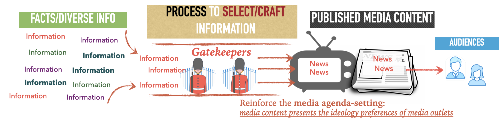
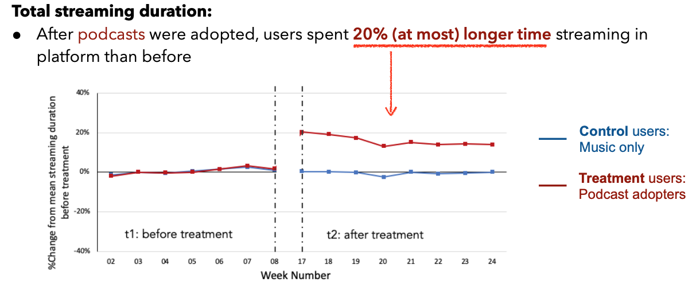
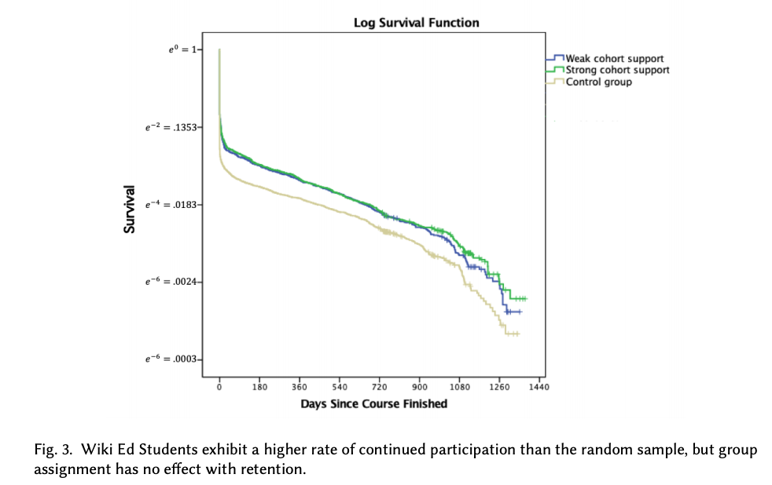

Ang Li
Collaboration and Open Content in Social Media
Social Media Gatekeepers: [Talk at CSCW]
Social media has become an important source where people gather and communicate news. Prior studies in conventional mass media suggest that gatekeepers play an important role in the production of news messages. Despite the initial claim of social media being a place of democratized participation, we now know, social media is not free of gatekeepers either. However, it is unclear who social media gatekeepers are, how to identify them, and most importantly how do they impact news content production and dissemination. Due to fundamental differences between the structure and workings of social media vs. traditional media, what we know from mass media cannot directly apply in the context of social media. To answer these questions, we propose an actionable definition of social media gatekeepers backed by literature on news reporting in social media and traditional mass media. We then present a case study of identifying gatekeepers on Twitter at scale, using a set of 70k Twitter users interested in the news topic of "immigration''. The results of our mixed research approach highlight that, unlike the general Twitter users, the Twitter gatekeepers are often self-determining citizen journalists who manage their media presentation strategically. Moreover, Twitter gatekeepers tend to exhibit behavior mostly in accordance with the journalism norms and they contribute to and guard the truthfulness and neutrality of content.

* Please check our full paper and talk at: [Paper], [Talk].
User Modeling
My recent work in Spotify research involves using both qualitative and data-driven methods to investigate users' online audio streaming habits. The results uncover the different behavior patterns when users interact with the streaming platform and provide design implications on how to improve the current platform to better support users.
Relevant Projects:
Music search mindset:
Music listening is a commonplace activity that has transformed as users engage with online streaming platforms. When presented with anytime, anywhere access to a vast catalog of music, users face challenges in searching for what they want to hear. We propose that users who engage in domain-specific search (e.g., music search) have different information-seeking needs than in general search. Using a mixed-method approach that combines a large-scale user survey with behavior data analyses, we describe the construct of search mindset on a leading online streaming music platform and then investigate two types of search mindsets: focused, where a user is looking for one thing in particular, and non-focused, where a user is open to different results. Our results reveal that searches in the music domain are more likely to be focused than non-focused. In addition, users' behavior (e.g., clicks, streams, querying, etc.) on a music search system is influenced by their search mindset. Finally, we propose design implications for music search systems to best support their users. Please check our full paper and slides deck at: [Paper], [Poster]
Music vs. Podcast listening habits: [Media Link]
Podcasts have been one of the fastest growing online streaming media, which create tremendous opportunities for online streaming platforms but also introduce new challenges. Since the functional use of podcasts and music may largely overlap for many people, incorporating podcast listening may influence and change the way users have originally consumed music. Adopting quasi-experimental techniques, we assess the causal influence of adding a new class of content on user listening behavior by using large scale observational data collected from a widely used audio streaming platform. Our results demonstrate that podcast and music consumption compete slightly but do not replace one another – users open another time window to listen to podcasts.

In addition, we found that users who have added podcasts to their music listening demonstrate significantly different consumption habits for podcasts vs. music in terms of the streaming time, duration and frequency. Taking all the differences as input features to a machine learning model, we demonstrate that a podcast listening session is predictable at the start of a new listening session. Our study provides a novel contribution for online audio streaming and consumption services to understand their potential consumers and to best support their current users with an improved recommendation system. Please check our full paper and slides deck at: [Paper], [Slides], [Media]
Online Production Communities
Wikipedia Education: [Talk at CSCW]
Attracting and retaining newcomers is critical and challenging for online production communities such as Wikipedia, both because volunteers need specialized training and are likely to leave before being integrated into the community. In response to these challenges, the Wikimedia Foundation started the Wiki Education Project (Wiki Ed), an online program in which college students edit Wikipedia articles as class assignments. The Wiki Ed program incorporates many components of institutional socialization, a process many conventional organizations successfully use to integrate new employees through formalized on-boarding practices. Research has not adequately investigated whether Wiki Ed and similar programs are effective ways to integrate volunteers in online communities, and, if so, the mechanisms involved.

This paper evaluates the Wiki Ed program by comparing 16,819 student editors in 770 Wiki Ed classes with new editors who joined Wikipedia in the conventional way. The evaluation shows that the Wiki Ed students did more work, improved articles more, and were more committed to Wikipedia. For example, compared to new editors who joined Wikipedia in the conventional way they were twice as likely to still be editing Wikipedia a year after their Wiki Ed class was finished. Further, students in classrooms that encouraged joint activity, a key component of institutional socialization, produced better quality work than those in classrooms where students worked independently. These findings are consistent with an interpretation that the Wiki Ed program was successful because it incorporated elements of institutionalized socialization.
Github: Successful Online Socialization: Lessons from the Wikipedia Education Program.
* Please check our full paper, slides deck and talk at: [Paper], [Slides], [Talk].
* This paper received Honorable Mention award in CSCW 2020.
Breaking events in Wikipedia
This project aims to explore the value and impact of breaking events on engaging newcomers into the online production communities, such as Wikipedia. The results provide insights on how the intrinsic and extrinsic motivation works differently for engaging new users in the user generated content systems.
Github: Keeping up on Current Events! A Case Study of Newcomers to Wikipedia.
Slides: Presentation slides.
Selected Publications
For complete publication profile, please visit my Google Scholar profile page: Ang Li - Google Scholar.
[1] Li, A., Farzan, R., Lin, Y. R., Zhou, Y., Teng, X., & Yan, M. (2022). Identifying and Understanding Social Media Gatekeepers: A Case Study of Gatekeepers for Immigration Related News on Twitter. Proceedings of the ACM on Human-Computer Interaction, 6(CSCW2), 1-25. [Paper], [Talk].
[2] Li, A., Yao, Z., Yang, D., Kulkarni, C., Farzan, R., & Kraut, R. E.. (2020, May). Successful Online Socialization: Lessons from the Wikipedia Education Program. In Proceedings of ACM Hum.-Comput. Interact. 4, CSCW1, Article 050. [Paper], [Slides], [Talk]. Honorable Mention award in CSCW 2020
[3] Li, A., Wang, A., Nazari, Z., Chandar, P., & Carterette, B. (2020, April). Do podcasts and music compete with one another? Understanding users’ audio streaming habits. In Proceedings of The Web Conference 2020 (pp. 1920-1931).ACM. [Paper], [Slides]
[4] Li, A., Thom, J., Chandar, P., Hosey, C., Thomas, B. S., & Garcia-Gathright, J. (2019, May). Search Mindsets: Understanding Focused and Non-Focused Information Seeking in Music Search. In The World Wide Web Conference (pp. 2971-2977). ACM. [Paper], [Poster]
[5] Li, A., & Farzan, R. (2018, September). Keeping up on Current Events! A Case Study of Newcomers to Wikipedia. In International Conference on Social Informatics (pp. 348-369). Springer, Cham. [Paper], [Slides]